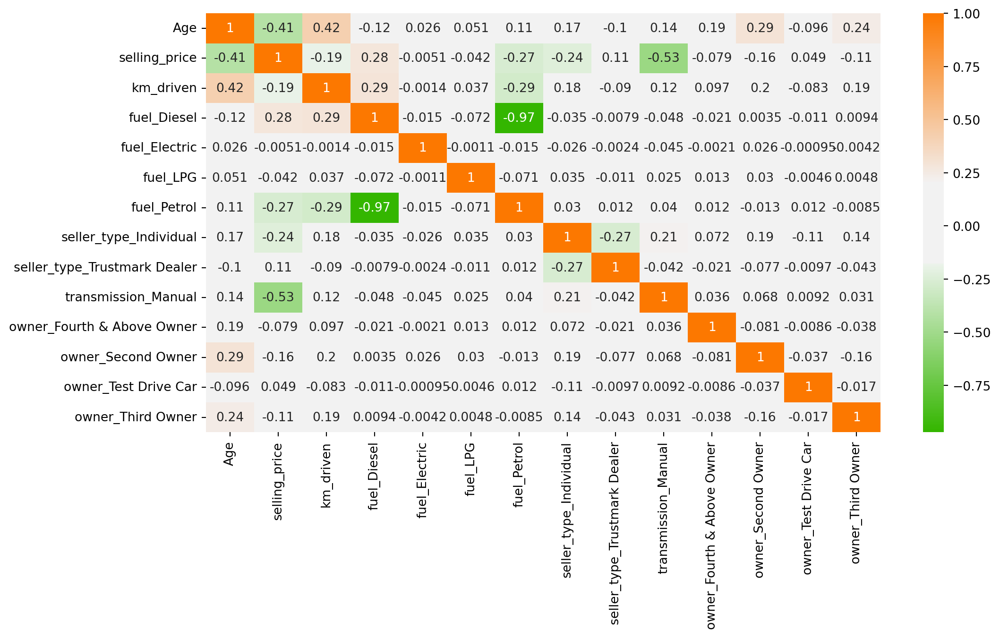

import os
# Current Working Directory
os.getcwd()
Chapter # 07
Regression Analysis
Chapter # 07
Regression Analysis
Introduction
Multiple linear regression is used to model the relationship between a continuous response variable and continuous or categorical explanatory variables. Multiple linear regression allows to evaluate the relationship between two variables, while controlling for the effect (i.e., removing the effect) of other variables.
Working Directory
# Files in Working Directory
for file in os.listdir():
print(file)Importing Necessary Python Packages
import pandas as pd
import numpy as np
import matplotlib.pyplot as plt
import seaborn as sns
import sklearn
import warnings
warnings.filterwarnings('ignore')Importing Dataset
df = pd.read_csv('DATA/CAR DETAILS FROM CAR DEKHO.csv')df.head()| name | year | selling_price | km_driven | fuel | seller_type | transmission | owner | |
|---|---|---|---|---|---|---|---|---|
| 0 | Maruti 800 AC | 2007 | 60000 | 70000 | Petrol | Individual | Manual | First Owner |
| 1 | Maruti Wagon R LXI Minor | 2007 | 135000 | 50000 | Petrol | Individual | Manual | First Owner |
| 2 | Hyundai Verna 1.6 SX | 2012 | 600000 | 100000 | Diesel | Individual | Manual | First Owner |
| 3 | Datsun RediGO T Option | 2017 | 250000 | 46000 | Petrol | Individual | Manual | First Owner |
| 4 | Honda Amaze VX i-DTEC | 2014 | 450000 | 141000 | Diesel | Individual | Manual | Second Owner |
Metadata of the Dataset
df.info()<class 'pandas.core.frame.DataFrame'>
RangeIndex: 4340 entries, 0 to 4339
Data columns (total 8 columns):
# Column Non-Null Count Dtype
--- ------ -------------- -----
0 name 4340 non-null object
1 year 4340 non-null int64
2 selling_price 4340 non-null int64
3 km_driven 4340 non-null int64
4 fuel 4340 non-null object
5 seller_type 4340 non-null object
6 transmission 4340 non-null object
7 owner 4340 non-null object
dtypes: int64(3), object(5)
memory usage: 271.4+ KBdf.shape(4340, 8)df.isna().sum()name 0
year 0
selling_price 0
km_driven 0
fuel 0
seller_type 0
transmission 0
owner 0
dtype: int64Exploratory Data Analysis
We have 1491 unique car names in our dataset. Clearly, it does not add any meaning to our dataset, since there are so many categories. Let’s drop that column.
df['name'].nunique()1491df.drop(columns = ['name'], inplace = True)
df.info()<class 'pandas.core.frame.DataFrame'>
RangeIndex: 4340 entries, 0 to 4339
Data columns (total 7 columns):
# Column Non-Null Count Dtype
--- ------ -------------- -----
0 year 4340 non-null int64
1 selling_price 4340 non-null int64
2 km_driven 4340 non-null int64
3 fuel 4340 non-null object
4 seller_type 4340 non-null object
5 transmission 4340 non-null object
6 owner 4340 non-null object
dtypes: int64(3), object(4)
memory usage: 237.5+ KBThe dataset has the column named “Year”. Ideally, we need the age of car over the year it was bought / sold. So, let’s convert that to “Age” and remove the “Year” column.
df.insert(0, "Age", df["year"].max()+1-df["year"] )
df.drop('year', axis=1, inplace=True)
df.info()<class 'pandas.core.frame.DataFrame'>
RangeIndex: 4340 entries, 0 to 4339
Data columns (total 7 columns):
# Column Non-Null Count Dtype
--- ------ -------------- -----
0 Age 4340 non-null int64
1 selling_price 4340 non-null int64
2 km_driven 4340 non-null int64
3 fuel 4340 non-null object
4 seller_type 4340 non-null object
5 transmission 4340 non-null object
6 owner 4340 non-null object
dtypes: int64(3), object(4)
memory usage: 237.5+ KB“Age” is calculated by finding the difference between the maximum year available in our dataset and the year of that particular car. This is because, our calculations will be specific to that particular time period and to this dataset.
Finding Outliers
An outlier is a data point that differs significantly from other observations. They can cause the performance of the model to drop. Please look at Figure 1.
Outliers for Numeric Variables
for col in df.select_dtypes(exclude = 'object'):
sns.boxplot(data = df, x = col)
plt.show()Outliers for Categorical Variables
for col in df.select_dtypes(include = 'object'):
sns.boxplot(data = df, x = col, y = 'selling_price')
plt.show()Finding the Outliers in the Dataset
This is based on the concept of quartiles, which divide a dataset into four equal parts. The IQR (InterQuartile Range rule) rule specifically focuses on the range of values within the middle 50% of the data and uses this range to identify potential outliers.
We have to find the minimum and maximum quantile values for each unique value in the categorical columns and filter the outlier samples which do not fit into the 25th and 75th percentile of our target column (Selling Price).
On the other hand, the outliers in numerical columns can be filtered by the 25th and 75th percentiles of the same column. We don’t need to filter out with respect to the target column.
outliers_indexes = []
target = 'selling_price'
for col in df.select_dtypes(include='object').columns:
for cat in df[col].unique():
df1 = df[df[col] == cat]
q1 = df1[target].quantile(0.25)
q3 = df1[target].quantile(0.75)
iqr = q3-q1
maximum = q3 + (1.5 * iqr)
minimum = q1 - (1.5 * iqr)
outlier_samples = df1[(df1[target] < minimum) | (df1[target] > maximum)]
outliers_indexes.extend(outlier_samples.index.tolist())
for col in df.select_dtypes(exclude='object').columns:
q1 = df[col].quantile(0.25)
q3 = df[col].quantile(0.75)
iqr = q3-q1
maximum = q3 + (1.5 * iqr)
minimum = q1 - (1.5 * iqr)
outlier_samples = df[(df[col] < minimum) | (df[col] > maximum)]
outliers_indexes.extend(outlier_samples.index.tolist())
outliers_indexes = list(set(outliers_indexes))
print('{} outliers were identified, whose indices are:\n\n{}'.format(len(outliers_indexes), outliers_indexes))579 outliers were identified, whose indices are:
[4096, 4098, 2054, 12, 2062, 25, 27, 29, 30, 32, 33, 35, 36, 4132, 39, 40, 43, 44, 2097, 4147, 4153, 61, 4163, 69, 70, 4170, 2129, 88, 89, 2138, 4186, 2140, 4184, 94, 96, 101, 102, 103, 4200, 105, 2154, 4204, 4208, 2167, 2173, 2175, 2176, 2177, 4224, 2178, 4228, 2183, 4231, 137, 2187, 141, 2190, 2193, 149, 2198, 4253, 4254, 159, 4255, 163, 2212, 2216, 2223, 2224, 4273, 4274, 4275, 187, 2237, 2238, 191, 2239, 4286, 197, 2247, 2250, 204, 2256, 2257, 2258, 4304, 213, 4311, 4313, 218, 2266, 2269, 225, 227, 4325, 2278, 234, 2283, 236, 4331, 2295, 2299, 259, 263, 264, 2315, 269, 2318, 2323, 2333, 2337, 289, 291, 2342, 2348, 2350, 2351, 306, 2358, 2359, 315, 2364, 2366, 318, 320, 321, 324, 2373, 334, 337, 344, 345, 2394, 2401, 2402, 2404, 2406, 370, 372, 2425, 381, 2431, 391, 2440, 2441, 394, 399, 2447, 401, 2451, 410, 427, 431, 2482, 2495, 2499, 2503, 457, 461, 2511, 465, 2518, 2541, 2547, 502, 506, 2560, 2566, 2572, 525, 2574, 527, 2580, 534, 2582, 536, 537, 538, 539, 544, 2595, 548, 2597, 550, 551, 2598, 553, 554, 555, 2605, 563, 2612, 566, 2616, 572, 573, 574, 582, 585, 2635, 591, 592, 593, 2641, 601, 604, 2654, 2655, 610, 611, 612, 620, 623, 2672, 631, 2685, 2690, 644, 2696, 2699, 2704, 656, 660, 662, 665, 2715, 2718, 2737, 2738, 2739, 692, 2747, 2750, 711, 2760, 2766, 721, 2771, 2777, 729, 731, 2779, 2783, 738, 744, 747, 2796, 757, 2806, 2809, 2813, 770, 2819, 771, 2841, 2842, 796, 2847, 2848, 2850, 2851, 2855, 2858, 2865, 818, 820, 821, 828, 2878, 836, 838, 842, 849, 850, 851, 852, 2904, 2906, 2908, 2910, 2916, 2921, 878, 2929, 2942, 898, 899, 900, 2955, 908, 911, 2961, 2964, 917, 918, 919, 2972, 927, 930, 945, 957, 958, 959, 3007, 963, 968, 969, 975, 3026, 988, 997, 3046, 998, 1001, 3064, 3065, 3066, 1019, 1021, 1022, 1023, 1024, 3071, 1026, 3077, 1031, 1033, 1040, 1041, 1042, 3094, 1050, 1053, 1057, 1060, 1065, 1075, 1077, 1078, 1080, 1081, 1088, 3147, 1101, 1107, 1113, 1115, 1116, 3171, 1126, 3177, 1129, 1156, 3206, 3207, 3212, 1169, 3219, 1184, 3237, 3241, 1202, 3261, 1214, 1217, 3267, 3284, 3286, 3287, 1243, 1253, 3306, 3308, 3315, 3320, 3322, 1281, 1282, 1284, 3334, 1288, 1290, 1299, 3350, 1303, 3351, 1311, 1313, 3369, 3371, 3372, 1325, 1330, 3396, 1350, 3404, 1362, 3411, 1363, 3416, 3431, 1397, 3445, 3447, 3448, 1402, 1404, 3453, 1406, 3455, 3458, 1410, 3461, 1414, 1417, 3470, 1426, 3475, 1441, 1446, 3496, 1450, 1451, 1453, 3503, 1459, 1462, 1466, 3516, 3517, 3518, 1471, 1478, 1479, 1482, 3531, 3532, 3533, 3534, 1486, 3541, 1502, 3550, 1516, 3566, 3572, 3575, 3576, 1532, 3596, 3599, 1560, 3611, 3615, 1572, 3621, 3622, 3626, 1579, 3633, 1591, 1598, 3646, 3651, 3661, 3663, 1619, 1623, 1626, 3675, 3679, 1636, 3692, 1646, 1652, 3707, 1659, 1668, 1669, 3718, 3721, 1674, 3734, 1688, 3739, 1699, 1703, 1705, 1711, 3762, 3765, 1719, 1723, 1733, 3782, 3783, 3787, 3790, 3800, 3801, 1775, 1777, 1778, 1780, 3840, 3842, 1795, 3843, 3844, 1798, 1797, 3848, 3849, 3851, 3854, 3856, 3860, 3863, 3866, 1823, 3872, 3873, 3874, 3875, 1825, 1829, 1830, 1834, 1835, 1836, 3883, 3887, 3889, 3892, 1844, 1847, 3898, 3900, 3901, 1852, 3904, 3916, 3937, 3943, 3958, 1914, 1915, 3969, 1923, 1927, 3976, 3979, 3980, 3981, 1933, 3984, 1939, 1943, 3992, 3994, 3995, 4008, 1971, 1972, 4020, 1974, 1977, 1988, 4042, 4047, 1999, 4049, 4052, 4059, 2028, 2032, 2034, 4088, 2044]Bivariate Analysis
sns.scatterplot(data = df, x = 'km_driven', y = 'selling_price')
plt.show()sns.scatterplot(data = df, x = 'Age', y = 'selling_price')
plt.show()sns.scatterplot(data = df, x = 'fuel', y = 'selling_price')
plt.show()Encoding Categorical Variables
Label Encoding vs One Hot Encoding vs Ordinal Encoding
Label Encoding: Label encoding assigns a unique numerical label to each category in a categorical variable. It preserves the ordinal relationship between categories if present. For example, “Red” may be encoded as 1, “Green” as 2, and “Blue” as 3.
One-Hot Encoding: One-hot encoding converts each category in a categorical variable into a binary vector. It creates new binary columns for each category, representing the presence or absence of the category. Each category is mutually exclusive. For example, “Red” may be encoded as [1, 0, 0], “Green” as [0, 1, 0], and “Blue” as [0, 0, 1].
Ordinal Encoding: Ordinal encoding is similar to label encoding but considers the order or rank of categories. It assigns unique numerical labels to each category, preserving the ordinal relationship between categories. For example, “Cold” may be encoded as 1, “Warm” as 2, and “Hot” as 3.
Dummy Variable Trap
The Dummy variable trap is a scenario where there are attributes that are highly correlated (Multicollinear) and one variable predicts the value of others. When we use one-hot encoding for handling the categorical data, then one dummy variable (attribute) can be predicted with the help of other dummy variables. Hence, one dummy variable is highly correlated with other dummy variables. Using all dummy variables for regression models leads to a dummy variable trap. So, the regression models should be designed to exclude one dummy variable.
cat_col = df.select_dtypes(include = 'object').columns.values
cat_col
df = pd.get_dummies(df, cat_col, drop_first = True)
df.info()<class 'pandas.core.frame.DataFrame'>
RangeIndex: 4340 entries, 0 to 4339
Data columns (total 14 columns):
# Column Non-Null Count Dtype
--- ------ -------------- -----
0 Age 4340 non-null int64
1 selling_price 4340 non-null int64
2 km_driven 4340 non-null int64
3 fuel_Diesel 4340 non-null bool
4 fuel_Electric 4340 non-null bool
5 fuel_LPG 4340 non-null bool
6 fuel_Petrol 4340 non-null bool
7 seller_type_Individual 4340 non-null bool
8 seller_type_Trustmark Dealer 4340 non-null bool
9 transmission_Manual 4340 non-null bool
10 owner_Fourth & Above Owner 4340 non-null bool
11 owner_Second Owner 4340 non-null bool
12 owner_Test Drive Car 4340 non-null bool
13 owner_Third Owner 4340 non-null bool
dtypes: bool(11), int64(3)
memory usage: 148.5 KBCorrelation Analysis
plt.figure(figsize = (12,6))
cmap = sns.diverging_palette(125, 28, s=100, l=65, sep=50, as_cmap=True)
sns.heatmap(df.corr(), annot = True, cmap = cmap)
plt.show()
Multiple Linear Regression Model
import statsmodels.api as sm
# Installing stargazer package
#!pip install stargazer
from stargazer.stargazer import Stargazersel_price = ['selling_price']
next_col = df.columns.difference(sel_price, sort = False).tolist()
df = df[sel_price + next_col]
df.head()| selling_price | Age | km_driven | fuel_Diesel | fuel_Electric | fuel_LPG | fuel_Petrol | seller_type_Individual | seller_type_Trustmark Dealer | transmission_Manual | owner_Fourth & Above Owner | owner_Second Owner | owner_Test Drive Car | owner_Third Owner | |
|---|---|---|---|---|---|---|---|---|---|---|---|---|---|---|
| 0 | 60000 | 14 | 70000 | False | False | False | True | True | False | True | False | False | False | False |
| 1 | 135000 | 14 | 50000 | False | False | False | True | True | False | True | False | False | False | False |
| 2 | 600000 | 9 | 100000 | True | False | False | False | True | False | True | False | False | False | False |
| 3 | 250000 | 4 | 46000 | False | False | False | True | True | False | True | False | False | False | False |
| 4 | 450000 | 7 | 141000 | True | False | False | False | True | False | True | False | True | False | False |
df['selling_price'] = pd.to_numeric(df['selling_price'], errors = 'coerce')
bool_cols = df.select_dtypes(include = "bool").columns
df[bool_cols] = df[bool_cols].astype(int)
model_1 = sm.OLS(endog=df['selling_price'], exog = sm.add_constant(df[df.columns[1:]])).fit()
model_2 = sm.OLS(endog=df['selling_price'], exog = sm.add_constant(df[df.columns[1:10]])).fit()
model_3 = sm.OLS(endog=df['selling_price'], exog = sm.add_constant(df[['Age','km_driven', 'fuel_Diesel','seller_type_Individual','seller_type_Trustmark Dealer','transmission_Manual','owner_Second Owner']])).fit()print(model_1.summary()) OLS Regression Results
==============================================================================
Dep. Variable: selling_price R-squared: 0.459
Model: OLS Adj. R-squared: 0.458
Method: Least Squares F-statistic: 282.6
Date: Fri, 14 Feb 2025 Prob (F-statistic): 0.00
Time: 15:55:12 Log-Likelihood: -62408.
No. Observations: 4340 AIC: 1.248e+05
Df Residuals: 4326 BIC: 1.249e+05
Df Model: 13
Covariance Type: nonrobust
================================================================================================
coef std err t P>|t| [0.025 0.975]
------------------------------------------------------------------------------------------------
const 1.545e+06 7.16e+04 21.568 0.000 1.4e+06 1.69e+06
Age -3.526e+04 1918.299 -18.379 0.000 -3.9e+04 -3.15e+04
km_driven -0.9591 0.168 -5.699 0.000 -1.289 -0.629
fuel_Diesel 2.863e+05 6.82e+04 4.200 0.000 1.53e+05 4.2e+05
fuel_Electric -6.059e+05 4.32e+05 -1.401 0.161 -1.45e+06 2.42e+05
fuel_LPG 4.7e+04 1.12e+05 0.421 0.674 -1.72e+05 2.66e+05
fuel_Petrol -4245.2165 6.82e+04 -0.062 0.950 -1.38e+05 1.3e+05
seller_type_Individual -6.638e+04 1.65e+04 -4.029 0.000 -9.87e+04 -3.41e+04
seller_type_Trustmark Dealer 1.675e+05 4.45e+04 3.768 0.000 8.04e+04 2.55e+05
transmission_Manual -8.703e+05 2.2e+04 -39.533 0.000 -9.13e+05 -8.27e+05
owner_Fourth & Above Owner -1454.4055 4.99e+04 -0.029 0.977 -9.92e+04 9.63e+04
owner_Second Owner -4.093e+04 1.67e+04 -2.454 0.014 -7.36e+04 -8234.578
owner_Test Drive Car 1.687e+05 1.05e+05 1.609 0.108 -3.68e+04 3.74e+05
owner_Third Owner -3.993e+04 2.78e+04 -1.437 0.151 -9.44e+04 1.45e+04
==============================================================================
Omnibus: 4374.995 Durbin-Watson: 1.937
Prob(Omnibus): 0.000 Jarque-Bera (JB): 506169.232
Skew: 4.669 Prob(JB): 0.00
Kurtosis: 55.076 Cond. No. 5.42e+06
==============================================================================
Notes:
[1] Standard Errors assume that the covariance matrix of the errors is correctly specified.
[2] The condition number is large, 5.42e+06. This might indicate that there are
strong multicollinearity or other numerical problems.models = Stargazer([model_1, model_2, model_3])
models.significant_digits(3)models.render_html()| Dependent variable: selling_price | |||
| (1) | (2) | (3) | |
| Age | -35256.902*** | -36950.119*** | -36140.068*** |
| (1918.299) | (1776.021) | (1816.813) | |
| const | 1545184.985*** | 1550503.213*** | 1547027.503*** |
| (71641.224) | (71619.334) | (25022.846) | |
| fuel_Diesel | 286332.040*** | 290274.026*** | 289637.182*** |
| (68177.010) | (68128.080) | (14101.193) | |
| fuel_Electric | -605933.534 | -623458.942 | |
| (432383.631) | (432536.484) | ||
| fuel_LPG | 47004.639 | 50861.596 | |
| (111690.937) | (111713.331) | ||
| fuel_Petrol | -4245.216 | 899.011 | |
| (68229.480) | (68167.379) | ||
| km_driven | -0.959*** | -1.013*** | -0.988*** |
| (0.168) | (0.167) | (0.167) | |
| owner_Fourth & Above Owner | -1454.405 | ||
| (49856.990) | |||
| owner_Second Owner | -40932.174** | -34500.253** | |
| (16678.086) | (15724.894) | ||
| owner_Test Drive Car | 168678.588 | ||
| (104824.642) | |||
| owner_Third Owner | -39927.588 | ||
| (27782.712) | |||
| seller_type_Individual | -66383.269*** | -76806.473*** | -71593.310*** |
| (16477.535) | (16060.299) | (16176.994) | |
| seller_type_Trustmark Dealer | 167541.023*** | 164745.674*** | 164060.694*** |
| (44463.813) | (44434.987) | (44408.159) | |
| transmission_Manual | -870336.594*** | -867659.480*** | -866266.983*** |
| (22015.277) | (21994.503) | (21952.705) | |
| Observations | 4340 | 4340 | 4340 |
| R2 | 0.459 | 0.458 | 0.458 |
| Adjusted R2 | 0.458 | 0.457 | 0.458 |
| Residual Std. Error | 426076.017 (df=4326) | 426335.150 (df=4330) | 426120.647 (df=4332) |
| F Statistic | 282.623*** (df=13; 4326) | 406.709*** (df=9; 4330) | 523.775*** (df=7; 4332) |
| Note: | p<0.1; p<0.05; p<0.01 | ||
Build the Model in Machine Learning
X = df.drop(columns = ['selling_price'], axis = 1)
y = df['selling_price']from sklearn.model_selection import train_test_splitX_train, X_test, y_train, y_test = train_test_split(X, y, test_size = 0.30, random_state = 42)Standardize (Normalize) the Data
from sklearn.preprocessing import StandardScaler
scaler = StandardScaler()
scaler.fit(X_train)
X_train_scaled = scaler.transform(X_train)
X_test_scaled = scaler.transform(X_test)Train the Model
from sklearn.linear_model import LinearRegression
linear_reg = LinearRegression()
linear_reg.fit(X_train_scaled, y_train)LinearRegression()In a Jupyter environment, please rerun this cell to show the HTML representation or trust the notebook.
On GitHub, the HTML representation is unable to render, please try loading this page with nbviewer.org.
LinearRegression()
pd.DataFrame(data = np.append(linear_reg.intercept_ , linear_reg.coef_), index = ['Intercept']+[col+" Coef." for col in X.columns], columns=['Value']).sort_values('Value', ascending=False)| Value | |
|---|---|
| Intercept | 510002.261027 |
| fuel_Diesel Coef. | 146649.985510 |
| seller_type_Trustmark Dealer Coef. | 24531.468884 |
| owner_Test Drive Car Coef. | 10297.650184 |
| fuel_LPG Coef. | 5419.717299 |
| owner_Fourth & Above Owner Coef. | -1696.295901 |
| fuel_Petrol Coef. | -7297.080696 |
| owner_Third Owner Coef. | -8607.130414 |
| fuel_Electric Coef. | -11304.751995 |
| owner_Second Owner Coef. | -14611.147442 |
| seller_type_Individual Coef. | -25802.779434 |
| km_driven Coef. | -49258.412716 |
| Age Coef. | -149688.999744 |
| transmission_Manual Coef. | -273774.485929 |
Evaluation of the Model
Scikit Learn provides a metrics feature which helps us to measure the metrics of our model. We can use that to determine metrics include Mean Squared Error, Mean Absolute Error, Root Mean Squared Error, and R2-Score.
Mean Absolute Error(MAE) calculates the absolute difference between the actual and predicted values. We get the sum of all the prediction errors and divide them by the total number of data points. Figure 2 shows the formula for MAE.
Mean Squared Error(MSE) This is the most used metric. It finds the squared difference between actual and predicted values. We get the sum of the square of all prediction errors and divide it by the number of data points. Figure 3 shows the formula for MSE.
Root Mean Squared Error(RMSE) is the square root of MSE. Since MSE is calculated by the square of error, the square root brings it back to the same level of prediction error. Figure 4 shows the formula for RMSE.

R Squared (R2): R2 is also called the coefficient of determination or goodness of fit score regression function. It measures how much irregularity in the dependent variable the model can explain. The R2 value is between 0 to 1, and a bigger value shows a better fit between prediction and actual value.
from sklearn import metricsdef model_evaluation(model, X_test, y_test, model_name):
y_pred = model.predict(X_test)
MAE = metrics.mean_absolute_error(y_test, y_pred)
MSE = metrics.mean_squared_error(y_test, y_pred)
RMSE = np.sqrt(MSE)
R2_Score = metrics.r2_score(y_test, y_pred)
return pd.DataFrame([MAE, MSE, RMSE, R2_Score], index=['MAE', 'MSE', 'RMSE' ,'R2-Score'], columns=[model_name])
model_evaluation(linear_reg, X_test_scaled, y_test, 'Linear Reg.')| Linear Reg. | |
|---|---|
| MAE | 2.202694e+05 |
| MSE | 1.631171e+11 |
| RMSE | 4.038775e+05 |
| R2-Score | 4.482968e-01 |
Assumptions of Linear Regression
Check for Homoscedasticity:
Assumption 03 - Residual Errors have a Mean Value of Zero
Assumption 04 - Residual Errors have Constant Variance
Homoscedasticity means that the residuals have equal or almost equal variance across the regression line. By plotting the error terms with predicted terms we can check that there should not be any pattern in the error terms.
Figure 5 and Figure 6 shows these assumptions.

regr = LinearRegression()
regr.fit(X_train,y_train)
y_pred = regr.predict(X_train)
residuals = y_train.values-y_predassum_df = pd.DataFrame({'y_pred':y_pred, 'residuals': residuals})
plt.figure(figsize = (15,8))
sns.set(context="notebook", palette="Spectral", style = 'darkgrid' ,font_scale = 1.0, color_codes=True)
p = sns.scatterplot(data = assum_df, x = y_pred, y = residuals)
plt.xlabel('y_pred/predicted values')
plt.ylabel('Residuals')
#plt.ylim(-10,20)
#plt.xlim(0,25)
p = sns.lineplot(x = [0,26],y = [0,0],color='blue')
p = plt.title('Residuals vs fitted values plot for homoscedasticity check')
plt.show()Goldfeld Quandt Test
Checking heteroscedasticity : Using Goldfeld Quandt we test for heteroscedasticity.
Null Hypothesis: Error terms are homoscedastic
Alternative Hypothesis: Error terms are heteroscedastic.
import statsmodels.stats.api as sms
from statsmodels.compat import lzip
name = ['F statistic', 'p-value']
test = sms.het_goldfeldquandt(residuals, X_train)
lzip(name, test)[('F statistic', np.float64(1.0812414049241326)),
('p-value', np.float64(0.06483149744205788))]Since p value is more than 0.05 in Goldfeld Quandt Test, we can’t reject null hypothesis that error terms are homoscedastic.
Check for Normality of Error Terms/Residuals
Assumptions 01 - Linearity of the Data
p = sns.distplot(residuals,kde=True)
p = plt.title('Normality of error terms/residuals')
plt.show()The residual terms are pretty much normally distributed for the number of test points we took. Remember the central limit theorem which says that as the sample size increases the distribution tends to be normal. A skew is also visible from the plot. It’s very difficult to get perfect curves, distributions in real life data.
No Autocorrelation of Residuals
Assumptions 02 - Predictors (x) are Independent & Observed with Negligible Error
When the residuals are autocorrelated, it means that the current value is dependent of the previous (historic) values and that there is a definite unexplained pattern in the Y variable that shows up in the error terms. Though it is more evident in time series data.
In plain terms autocorrelation takes place when there’s a pattern in the rows of the data. This is usual in time series data as there is a pattern of time for eg. Week of the day effect which is a very famous pattern seen in stock markets where people tend to buy stocks more towards the beginning of weekends and tend to sell more on Mondays. There’s been great study about this phenomenon and it is still a matter of research as to what actual factors cause this trend.
plt.figure(figsize=(10,5))
p = sns.lineplot(x = y_pred,y = residuals,marker='o',color='blue')
plt.xlabel('y_pred/predicted values')
plt.ylabel('Residuals')
#plt.ylim(-10,10)
#plt.xlim(0,26)
p = sns.lineplot(x = [0,26], y =[0,0],color='red')
p = plt.title('Residuals vs fitted values plot for autocorrelation check')
plt.show()
# autocorrelation
sm.graphics.tsa.plot_acf(residuals, lags=40)
plt.show()Multicollinearity
In regression, multicollinearity refers to the extent to which independent variables are correlated. Multicollinearity affects the coefficients and p-values, but it does not influence the predictions, precision of the predictions, and the goodness-of-fit statistics. If your primary goal is to make predictions, and you don’t need to understand the role of each independent variable, you don’t need to reduce severe multicollinearity.
from statsmodels.stats.outliers_influence import variance_inflation_factor
# VIF dataframe
vif_data = pd.DataFrame()
vif_data["feature"] = X.columns
# calculating VIF for each feature
vif_data["VIF"] = [variance_inflation_factor(X.values, i)
for i in range(len(X.columns))]
print(vif_data) feature VIF
0 Age 7.016427
1 km_driven 4.435080
2 fuel_Diesel 6.555573
3 fuel_Electric 1.003684
4 fuel_LPG 1.086386
5 fuel_Petrol 6.843066
6 seller_type_Individual 4.810789
7 seller_type_Trustmark Dealer 1.108127
8 transmission_Manual 9.739791
9 owner_Fourth & Above Owner 1.108982
10 owner_Second Owner 1.694604
11 owner_Test Drive Car 1.028466
12 owner_Third Owner 1.291087Feature Selection in Linear Regression
For a dataset with d features, if we apply the hit and trial method with all possible combinations of features then total (2d – 1) models need to be evaluated for a significant set of features. It is a time-consuming approach; therefore, we use feature selection techniques to find out the smallest set of features more efficiently.
There are three types of feature selection techniques :
Filter methods
Wrapper methods
Embedded methods
Figure 7 compares the three methods.

Here, we will only discuss feature selection using Wrapper methods in Python
Wrapper Methods
In wrapper methods, the feature selection process is based on a specific machine learning algorithm that we are trying to fit on a given dataset.
It follows a greedy search approach by evaluating all the possible combinations of features against the evaluation criterion. The evaluation criterion is simply the performance measure that depends on the type of problem, e.g., in regression, evaluation criterion can be p-values, R-squared, Adjusted R-squared, similarly for classification the evaluation criterion can be accuracy, precision, recall, f1-score, etc. Finally, it selects the combination of features that gives the optimal results for the specified machine learning algorithm.
Most commonly used techniques under wrapper methods are:
Forward selection
Backward elimination
Bi-directional elimination(Stepwise Selection)
Forward Selection
In forward selection, we start with a null model and then start fitting the model with each individual feature one at a time and select the feature with the minimum p-value. Now fit a model with two features by trying combinations of the earlier selected feature with all other remaining features. Again select the feature with the minimum p-value. Now fit a model with three features by trying combinations of two previously selected features with other remaining features. Repeat this process until we have a set of selected features with a p-value of individual features less than the significance level.
In short, the steps for the forward selection technique are as follows :
Choose a significance level (e.g. SL = 0.05 with a 95% confidence).
Fit all possible simple regression models by considering one feature at a time. Total ’n’ models are possible. Select the feature with the lowest p-value.
Fit all possible models with one extra feature added to the previously selected feature(s).
Again, select the feature with a minimum p-value. if p_value < significance level then go to Step 3, otherwise terminate the process.
Forward Selection Using User Defined Function
def forward_selection(data, target, significance_level=0.05):
initial_features = data.columns.tolist()
best_features = []
while (len(initial_features)>0):
remaining_features = list(set(initial_features)-set(best_features))
new_pval = pd.Series(index=remaining_features)
for new_column in remaining_features:
model = sm.OLS(target, sm.add_constant(data[best_features+[new_column]])).fit()
new_pval[new_column] = model.pvalues[new_column]
min_p_value = new_pval.min()
if(min_p_value<significance_level):
best_features.append(new_pval.idxmin())
else:
break
return best_featuresfor i in forward_selection(X,y):
print (i)transmission_Manual
Age
fuel_Diesel
km_driven
seller_type_Individual
seller_type_Trustmark Dealer
owner_Second OwnerForward Selection Using Built-in Functions in Python
## Installing mlxtend package
#!pip install mlxtendfrom mlxtend.feature_selection import SequentialFeatureSelector as SFS
from sklearn.linear_model import LinearRegression
# Sequential Forward Selection(sfs)
sfs = SFS(LinearRegression(),
k_features=7,
forward=True,
floating=False,
scoring = 'r2',
cv = 0)SequentialFeatureSelector() function accepts the following major arguments :
LinearRegression()is an estimator for the entire process. Similarly, it can be any classification based algorithm.k_featuresindicates the number of features to be selected. It can be any random value, but the optimal value can be found by analyzing and visualizing the scores for different numbers of features.forwardandfloatingarguments for different flavors of wrapper methods, here, forward = True and floating = False are for forward selection technique.The
scoringargument specifies the evaluation criterion to be used. For regression problems, there is only r2 score in default implementation. Similarly for classification, it can be accuracy, precision, recall, f1-score, etc.cvargument is for k-fold cross-validation.
sfs.fit(X,y)
for x in sfs.k_feature_names_:
print (x)Age
km_driven
fuel_Diesel
seller_type_Individual
seller_type_Trustmark Dealer
transmission_Manual
owner_Second OwnerBackward Selection
In backward elimination, we start with the full model (including all the independent variables) and then remove the insignificant feature with the highest p-value(> significance level). This process repeats again and again until we have the final set of significant features.
In short, the steps involved in backward elimination are as follows:
Choose a significance level (e.g. SL = 0.05 with a 95% confidence).
Fit a full model including all the features.
Consider the feature with the highest p-value. If the p-value > significance level then go to Step 4, otherwise terminate the process.
Remove the feature which is under consideration.
Fit a model without this feature. Repeat the entire process from Step 3.
Backward Selection Using User Defined Functions
def backward_elimination(data, target,significance_level = 0.05):
features = data.columns.tolist()
while(len(features)>0):
features_with_constant = sm.add_constant(data[features])
p_values = sm.OLS(target, features_with_constant).fit().pvalues[1:]
max_p_value = p_values.max()
if(max_p_value >= significance_level):
excluded_feature = p_values.idxmax()
features.remove(excluded_feature)
else:
break
return featuresfor x in backward_elimination(X,y):
print (x)Age
km_driven
fuel_Diesel
seller_type_Individual
seller_type_Trustmark Dealer
transmission_Manual
owner_Second OwnerBackward Selection Using Built-in Functions in Python
#Sequential backward selection(sbs)
sbs = SFS(LinearRegression(),
k_features=7,
forward=False,
floating=False,
cv=0)
sbs.fit(X, y)SequentialFeatureSelector(cv=0, estimator=LinearRegression(), forward=False,
k_features=(7, 7), scoring='r2')In a Jupyter environment, please rerun this cell to show the HTML representation or trust the notebook. On GitHub, the HTML representation is unable to render, please try loading this page with nbviewer.org.
SequentialFeatureSelector(cv=0, estimator=LinearRegression(), forward=False,
k_features=(7, 7), scoring='r2')LinearRegression()
LinearRegression()
for x in sbs.k_feature_names_:
print (x)Age
km_driven
fuel_Diesel
seller_type_Individual
seller_type_Trustmark Dealer
transmission_Manual
owner_Second OwnerStep-wise Selection
It is similar to forward selection but the difference is while adding a new feature it also checks the significance of already added features and if it finds any of the already selected features insignificant then it simply removes that particular feature through backward elimination.
Hence, It is a combination of forward selection and backward elimination.
In short, the steps involved in bi-directional elimination (Stepwise Selection) are as follows:
Choose a significance level to enter and exit the model (e.g. SL_in = 0.05 and SL_out = 0.05 with 95% confidence).
Perform the next step of forward selection (newly added feature must have p-value < SL_in to enter).
Perform all steps of backward elimination (any previously added feature with p-value>SL_out is ready to exit the model).
Repeat steps 2 and 3 until we get a final optimal set of features.
Stepwise Selection Using User Defined Functions
def stepwise_selection(data, target,SL_in=0.05,SL_out = 0.05):
initial_features = data.columns.tolist()
best_features = []
while (len(initial_features)>0):
remaining_features = list(set(initial_features)-set(best_features))
new_pval = pd.Series(index=remaining_features)
for new_column in remaining_features:
model = sm.OLS(target, sm.add_constant(data[best_features+[new_column]])).fit()
new_pval[new_column] = model.pvalues[new_column]
min_p_value = new_pval.min()
if(min_p_value<SL_in):
best_features.append(new_pval.idxmin())
while(len(best_features)>0):
best_features_with_constant = sm.add_constant(data[best_features])
p_values = sm.OLS(target, best_features_with_constant).fit().pvalues[1:]
max_p_value = p_values.max()
if(max_p_value >= SL_out):
excluded_feature = p_values.idxmax()
best_features.remove(excluded_feature)
else:
break
else:
break
return best_featuresfor x in stepwise_selection(X,y):
print (x)transmission_Manual
Age
fuel_Diesel
km_driven
seller_type_Individual
seller_type_Trustmark Dealer
owner_Second OwnerStepwise Selection Using Built-in Functions in Python
# Sequential Forward Floating Selection(sffs)
sffs = SFS(LinearRegression(),
k_features=(3,7),
forward=True,
floating=True,
cv=0)
sffs.fit(X, y)SequentialFeatureSelector(cv=0, estimator=LinearRegression(), floating=True,
k_features=(3, 7), scoring='r2')In a Jupyter environment, please rerun this cell to show the HTML representation or trust the notebook. On GitHub, the HTML representation is unable to render, please try loading this page with nbviewer.org.
SequentialFeatureSelector(cv=0, estimator=LinearRegression(), floating=True,
k_features=(3, 7), scoring='r2')LinearRegression()
LinearRegression()
for x in sffs.k_feature_names_:
print(x)Age
km_driven
fuel_Diesel
seller_type_Individual
seller_type_Trustmark Dealer
transmission_Manual
owner_Second OwnerVisualization of Feature Selection
sfs1 = SFS(LinearRegression(),
k_features=(3,11),
forward=True,
floating=False,
cv=0)
sfs1.fit(X, y)SequentialFeatureSelector(cv=0, estimator=LinearRegression(),
k_features=(3, 11), scoring='r2')In a Jupyter environment, please rerun this cell to show the HTML representation or trust the notebook. On GitHub, the HTML representation is unable to render, please try loading this page with nbviewer.org.
SequentialFeatureSelector(cv=0, estimator=LinearRegression(),
k_features=(3, 11), scoring='r2')LinearRegression()
LinearRegression()
from mlxtend.plotting import plot_sequential_feature_selection as plot_sfs
import matplotlib.pyplot as plt
fig1 = plot_sfs(sfs1.get_metric_dict(), kind='std_dev')
plt.title('Sequential Forward Selection')
plt.show()Here, on the y-axis, the performance label indicates the R-squared values for the different number of features.
Conclusion
The following links - here and here - are used for the above code and discussions.